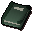

Book on chemicals

| Config name | digsitebook |
| Item id | 711 |
| Weight | 18oz |
| Members | Yes |
| Tradeable | No |
| Stackable | No |
| Options | Read |
| Defined in | scripts/quests/quest_itexam/configs/quest_itexam.obj |
Book on chemicals
It's about chemicals, judging from its' cover.
Quests
Referenced in scripts
scripts/general/scripts/book.rs2scripts/quests/quest_itexam/scripts/area_exam_centre.rs2